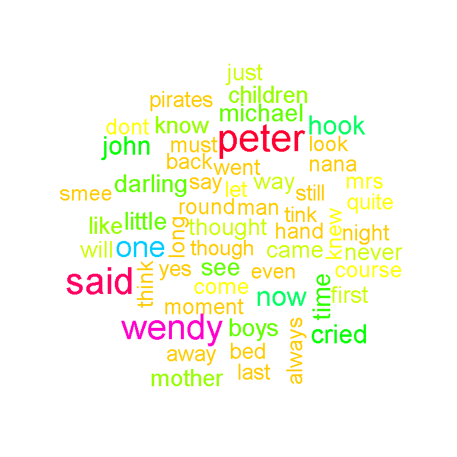
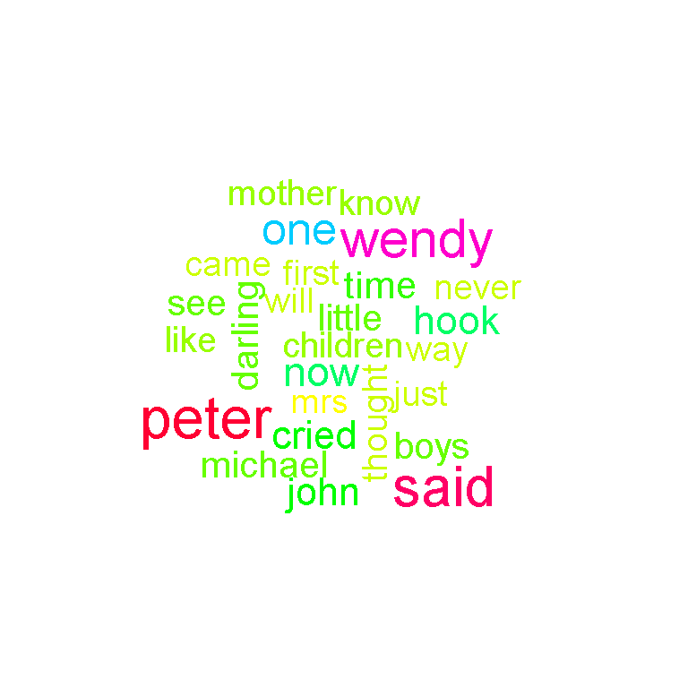

Hi there. This page is about using the statistical programming language R for obtaining the most frequent words in text.
One approach is with a wordcloud. The second approach is through obtain counts for words and presenting them in a bar graph.
(It is assumed that the reader is familiar with the dplyr package in R and its %>% pipe operator.)
For this example, I analyze a text file version of the book Peter Pan (1904). The link is from http://www.textfiles.com/etext/FICTION/barrie-peter-277.txt.
Before reading in the text, I load the wordcloud and tm libraries into R.
# Example: Reading a text file version of Peter Pan (1904)
# Link : http://www.textfiles.com/etext/FICTION/barrie-peter-277.txt
# Use install.packages("package_name") to install packages.
# Load packages (after installation):
# Ref: https://stackoverflow.com/questions/8175912/load-multiple-packages-at-once
packages <- c("wordcloud", "tm")
lapply(packages, require , character.only = TRUE)## [[1]]
## [1] TRUE
##
## [[2]]
## [1] TRUE# Example: Reading a text file version of Peter Pan (1904)
# Link : http://www.textfiles.com/etext/FICTION/barrie-peter-277.txt
peter_pan <- readLines("http://www.textfiles.com/etext/FICTION/barrie-peter-277.txt")
The head() function in R is used to preview the text.
# Check peter pan:
head(peter_pan, n = 20)## [1] " 1904"
## [2] ""
## [3] " PETER PAN"
## [4] ""
## [5] " by James M. Barrie"
## [6] ""
## [7] " CHAPTER I."
## [8] ""
## [9] " PETER BREAKS THROUGH."
## [10] ""
## [11] " All children, except one, grow up. They soon know that they will"
## [12] "grow up, and the way Wendy knew was this. One day when she was two"
## [13] "years old she was playing in a garden, and she plucked another"
## [14] "flower and ran with it to her mother. I suppose she must have looked"
## [15] "rather delightful, for Mrs. Darling put her hand to her heart and"
## [16] "cried, \"Oh, why can't you remain like this for ever!\" This was all"
## [17] "that passed between them on the subject, but henceforth Wendy knew"
## [18] "that she must grow up. You always know after you are two. Two is the"
## [19] "beginning of the end."
## [20] ""
From the tm package in R, I insert the peter_pan variable into the VectorSource() function which then goes inside the Corpus() function. A corpus is a collection of text documents.
The tm_map() functions are then used to extract words from text. This is done by removing whitespace, punctuation, numbers and converting letters to lowercase.
### Making a Wordcloud:
# Clean up data; convert to lowercase, remove quotes, whitespace, punctuation, stopwords, etc.
# Ref: https://www.youtube.com/watch?v=lRTerj8fdY0
peter_text <- Corpus(VectorSource(peter_pan))
peter_text_clean <- tm_map(peter_text, removePunctuation)
peter_text_clean <- tm_map(peter_text_clean, content_transformer(tolower))
peter_text_clean <- tm_map(peter_text_clean, removeNumbers)
peter_text_clean <- tm_map(peter_text_clean, stripWhitespace)
Stopwords In English
There are a bunch of words in the English language that are used to make sentences flow but don’t have much meaning on its own. These words include: the, and, but, through, over, under, a, an, he, she, him, her and so on.
head(stopwords("english"), n = 15) # Sample of English stopwords## [1] "i" "me" "my" "myself" "we"
## [6] "our" "ours" "ourselves" "you" "your"
## [11] "yours" "yourself" "yourselves" "he" "him"
The tm_map() function is used again to remove the stopwords from the text.
peter_text_clean <- tm_map(peter_text_clean, removeWords, stopwords('english'))
Creating Wordclouds
Once the text is all “clean” (reformatted), you can create the wordcloud. Making the wordcloud is not too difficult as it requires just the wordcloud() function.
# Wordcloud with colours:
wordcloud(peter_text_clean, scale = c(2, 1), min.freq = 50, colors = rainbow(30))
From the wordcloud above you can see that peter and wendy stick out. The word said stands out too and could have been considered a stop word that would be removed. The bottom right contains the word hook as in Captain Hook and not so much a regular hook.
To reduce the size of the wordcloud, I can raise the number in the min.freq argument in wordcloud(). In this case, I raise it to 70 such that the words in this wordcloud appear at least 70 times in the Peter Pan text.
# Raise the minimum frequency requirements, less words appear in wordcloud:
wordcloud(peter_text_clean, scale = c(2, 1), min.freq = 70, colors = rainbow(30))
Wordclouds help the viewer determine popular words in text. They are also fun and entertaining to look at. The problem with wordclouds though is that you do not really the counts for each word.
This second approach consists of tidying the data and displaying the word counts in a bar graph. The dplyr, ggplot2 and tidytext packages are used here.
(Reference: Text Mining With R [Online Book])
The first couple of lines of code consist of loading in the appropriate packages and reading the Peter Pan text.
### Analyzing The Frequencies Of Words In Text
# Reference: Text Mining In R [Online Book]
library(dplyr)
library(tidytext)
library(ggplot2)
peter_pan <- readLines("http://www.textfiles.com/etext/FICTION/barrie-peter-277.txt")
# Check peter pan:
head(peter_pan, n = 20)## [1] " 1904"
## [2] ""
## [3] " PETER PAN"
## [4] ""
## [5] " by James M. Barrie"
## [6] ""
## [7] " CHAPTER I."
## [8] ""
## [9] " PETER BREAKS THROUGH."
## [10] ""
## [11] " All children, except one, grow up. They soon know that they will"
## [12] "grow up, and the way Wendy knew was this. One day when she was two"
## [13] "years old she was playing in a garden, and she plucked another"
## [14] "flower and ran with it to her mother. I suppose she must have looked"
## [15] "rather delightful, for Mrs. Darling put her hand to her heart and"
## [16] "cried, \"Oh, why can't you remain like this for ever!\" This was all"
## [17] "that passed between them on the subject, but henceforth Wendy knew"
## [18] "that she must grow up. You always know after you are two. Two is the"
## [19] "beginning of the end."
## [20] ""
The R programming language keeps growing with these new packages, topics and concepts. This so called tibble is just a neater data frame. (I only heard of this tibble recently.)
Instead of using data.frame(), it would be data_frame().
peter_pan_df <- data_frame(Text = peter_pan) # tibble aka neater data frame
head(peter_pan_df, n = 20)## # A tibble: 20 x 1
## Text
## <chr>
## 1 1904
## 2
## 3 PETER PAN
## 4
## 5 by James M. Barrie
## 6
## 7 CHAPTER I.
## 8
## 9 PETER BREAKS THROUGH.
## 10
## 11 All children, except one, grow up. They soon know that they will
## 12 grow up, and the way Wendy knew was this. One day when she was two
## 13 years old she was playing in a garden, and she plucked another
## 14 flower and ran with it to her mother. I suppose she must have looked
## 15 rather delightful, for Mrs. Darling put her hand to her heart and
## 16 "cried, \"Oh, why can't you remain like this for ever!\" This was all"
## 17 that passed between them on the subject, but henceforth Wendy knew
## 18 that she must grow up. You always know after you are two. Two is the
## 19 beginning of the end.
## 20
The unnest_tokens() function from the tidytext package picks out the individual words and places them as rows.
peter_words <- peter_pan_df %>%
unnest_tokens(output = word, input = Text)
An anti_join() is used to remove stopwords from peter_words().
peter_words <- peter_words %>%
anti_join(stop_words) # Remove stop words in peter_words## Joining, by = "word"
The count() function with the %>% pipe operator from the dplyr package is used to obtain counts of the words.
# Word Counts:
peter_wordcounts <- peter_words %>% count(word, sort = TRUE)
head(peter_wordcounts)## # A tibble: 6 x 2
## word n
## <chr> <int>
## 1 peter 374
## 2 wendy 330
## 3 hook 151
## 4 cried 136
## 5 john 127
## 6 time 125
The data now has a column for words and a second column for the word counts. A bar graph can be prepared with the ggplot2 function ggplot().
# ggplot2 Plot:
peter_wordcounts %>%
filter(n > 70) %>%
mutate(word = reorder(word, n)) %>%
ggplot(aes(word, n)) +
geom_col() +
coord_flip() +
labs(x = "Word \n", y = "\n Count ", title = "Frequent Words In Peter Pan \n") +
geom_text(aes(label = n), hjust = 1.2, colour = "white", fontface = "bold") +
theme(plot.title = element_text(hjust = 0.5),
axis.title.x = element_text(face="bold", colour="darkblue", size = 12),
axis.title.y = element_text(face="bold", colour="darkblue", size = 12))
The geom_text() part of code is key for displaying the counts on the bars. This eliminates the guesswork from the viewer. The word said was featured in the wordcloud but it does not appear here.